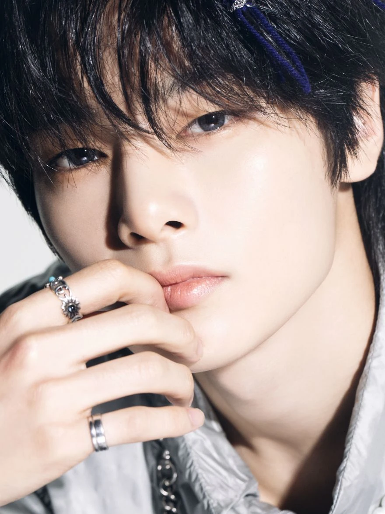
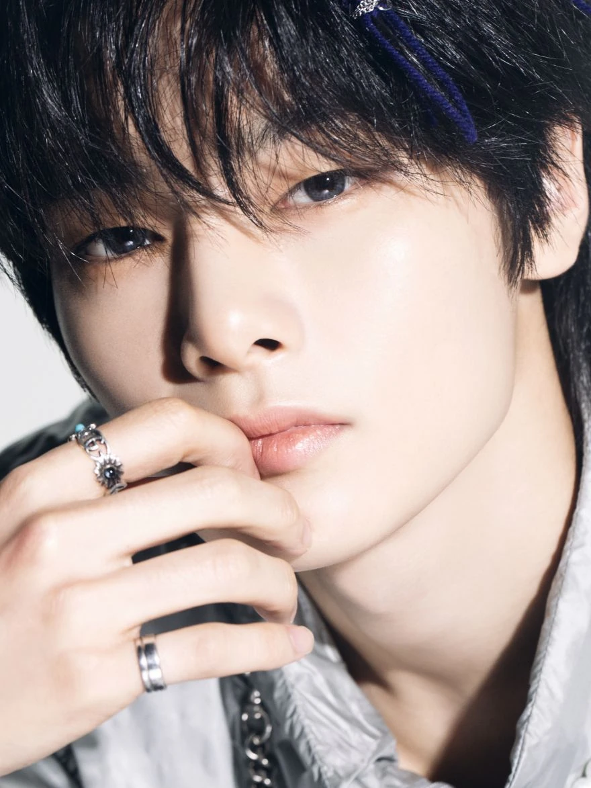

I.N Biography
Personal Life
I.N, also known as 아이엔 (Aien), was born on February 8, 2001, in Busan, South Korea. He discovered his passion for singing in middle school and started attending auditions in the 8th grade. In November 2017, he was accepted at SOPA (School of Performing Art) in Applied Music and Vocal, graduating on February 5, 2021.
 

Career
Predebut
I.N auditioned for JYP Entertainment when the company held auditions in Busan. He was accepted after his second attempt. His individual picture and name were officially revealed by the company on October 13, 2017, for his participation in the upcoming survival show Stray Kids. He was introduced with the role "Vocal". On the final episode of the show on December 19, 2017, it was confirmed that I.N would debut with the boy group Stray Kids.
2018-present: Stray Kids
I.N debuted under the stage name "I.N" with the mini album I am NOT as the sub-vocalist and maknae of Stray Kids on March 26, 2018. He released the song "Maknae On Top" featuring Bang Chan and Changbin as part of the SKZ-PLAYER series on January